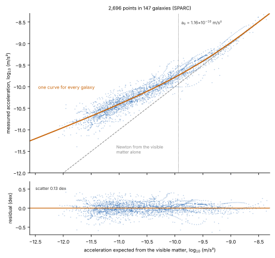
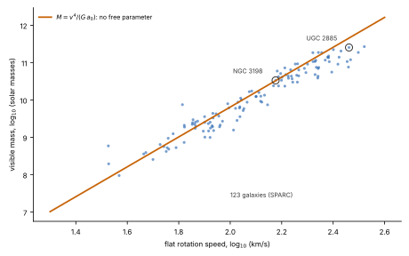
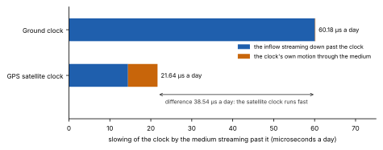

Library › The Unified Framework for the Graviton Pressure Theory
Existing Evidence Supporting Graviton Pressure Theory
About This Paper
Graviton Pressure Theory proposes that space is full: a medium fills it, flows into every mass, and carries light, gravity and the patterns that make up matter. This paper gathers the measurements that bear on that proposal. Some are reproduced exactly by GPT’s mechanism. Some show the medium already at work inside the standard account, used in its equations while its existence is denied. Some are anomalies that a medium account bears on directly. And some are constraints that any account of the medium must pass.
The paper examines six areas: the rotation of galaxies, gravitational waves, clocks and GPS, the bending and delay of light, the background light of the universe, and fields that persist without being paid for. It then gathers the places where the medium is already in the formulation, the places where the standard account is under strain, and what the evidence does not show. Each item is weighed by what it can and cannot establish.
These are not edge cases or theoretical anomalies. They are observational truths demanding a better foundation: one that starts not from curvature, but from cause.
This is the second edition; what changed from the first is listed at the end. Claims are marked by their status, as the key shows.
9.1 How the Evidence Is Weighed
Evidence does not all carry the same weight, and claiming more than a measurement shows would weaken the case it supports. Each item here is placed in one of four grades.
Reproduced. GPT’s mechanism gives the measured number. General relativity gives it too, so the measurement does not choose between them. What it shows is that GPT’s account is complete for that case, and that the mechanism GPT names is sufficient. These are the tests every account must pass.
The medium in the formulation. The standard account uses a medium’s properties or a medium’s mathematics while saying that no medium is there: a refractive index for gravity, an impedance for empty space, a river of space flowing into a black hole. These show that the medium is not an addition GPT makes to physics; it is already present in physics, unnamed.
Support. Measurements a medium account bears on directly and the standard account must explain by other means: a single acceleration scale across all galaxies, a preferred rest frame, flows that reproduce horizons. Support is not proof. For each, the standard account’s own explanation is stated.
Constraint. Measurements that limit what the medium can be. A proposal that fails one is withdrawn.
Matching numbers are not matching mechanisms [Argued] (Part 3).1 Where GPT and general relativity give the same number, the measurement confirms the number; which account names the cause is decided by the mechanism, not by the number. That is why the second grade matters: it shows what the standard account’s own equations treat as real.
9.2 Galaxies: One Acceleration Scale, Set by Visible Matter
9.2.1 The rotation problem
Stars in the outer parts of spiral galaxies orbit at nearly constant speeds, even where the visible matter thins out. Newton’s law, applied to the visible matter alone, says the speeds should decline, as the planets’ do with distance from the Sun: \(v = \sqrt{GM(r)/r}\), with \(M(r)\) the mass inside radius \(r\). Instead the rotation curves stay flat. Rubin, Ford and Thonnard showed it in 1980 for 21 galaxies out to the giant UGC 2885;2 radio measurements of hydrogen gas, as in NGC 3198, carried the flat curves far beyond the stars.3 The Triangulum galaxy, M33, our near neighbour, has a flat curve too.4
The standard account adds dark matter: an invisible mass in a halo around each galaxy, its amount and shape fitted galaxy by galaxy. After four decades of searching, no particle of it has been detected; the most sensitive search yet, LZ, found none.5
9.2.2 What the data show: one curve for every galaxy

The SPARC database gives the rotation curves of 175 disc galaxies together with their stars, measured in the near infrared, and their gas.6 In 2016 McGaugh, Lelli and Schombert compared, point by point, the acceleration measured from the rotation with the acceleration Newton’s law gives from the visible matter alone.7
Every galaxy follows one curve. [Argued] Figure 9.1 rebuilds their result from the public tables: 2,696 points in 147 galaxies, chosen as they chose them. Where the visible matter’s acceleration is high, the measured acceleration equals it. Where it is low, the measured acceleration is larger, but by an amount set entirely by the visible matter, through one acceleration scale: \(a_0 = 1.16\times10^{-10}\) m/s² in this rebuild, \(1.20\times10^{-10}\) in theirs. The scatter about the curve is 0.13 dex, about 35 per cent, and most of that is measurement error. Large and small galaxies, gas-rich and star-dominated, bright and faint, all lie on it.
Similar visible mass, similar rotation. [Argued] Galaxies with similar visible mass distributions exhibit similar rotation profiles. A flat speed \(v\) goes with a visible mass \(M = v^4/(G a_0)\), with no parameter fitted to any galaxy (Figure 9.2). This is the baryonic Tully–Fisher relation, and its scatter is small.8 For NGC 3198, the stars and gas give \(3.4\times10^{10}\) solar masses, and the relation gives a flat speed of 151 km/s; the measured speed is \(150\pm4\). For UGC 2885 the relation gives 250 km/s against a measured 290: lower by 15 per cent, within the uncertainty in how much mass each unit of starlight represents.
Where the light has a feature, so does the rotation. [Argued] Sancisi’s rule, from decades of rotation curves: for any feature in the distribution of the visible matter there is a corresponding feature in the rotation curve, and the reverse.9 A bump in the light is a bump in the speed. If the extra acceleration came from a smooth halo of other matter, it would smooth such features away; it does not.

9.2.3 The medium’s account: the relaxation boundary
The law beyond the boundary [Open] is owed: the exact shape of the curve in Figure 9.1 must follow from how the medium re-phases an outflow, and the value of \(a_0\) from the rate at which it does.
9.2.4 Further measurements that bear on the boundary
The boundary depends on the surroundings. [Argued] In a galaxy that sits in the strong acceleration of a large neighbour, the outer rotation curve declines where an isolated galaxy’s stays flat. Chae and colleagues found this external field effect in the SPARC galaxies at more than four standard deviations overall, and at eight to eleven in the clearest cases.10 In GPT the boundary is set by the combined flows, [Hypothesis] the galaxy’s own and its neighbours’, so a galaxy inside a strong outside flow reaches its boundary differently. A halo of dark matter, tied to its own galaxy, has no reason to care what lies outside.
The flat curves run far beyond the stars. [Argued] Weak gravitational lensing, the slight distortion of background galaxies by a foreground galaxy, measures the acceleration around galaxies far beyond any star or gas. Mistele and colleagues found the implied speeds stay flat for hundreds of kiloparsecs, possibly to a million parsecs, and follow the same baryonic Tully–Fisher relation.11 Light, as well as orbits, follows the same relation.
Wide binary stars are disputed. [Open] Pairs of stars thousands of astronomical units apart orbit each other at accelerations near \(a_0\), around the Sun’s own boundary distance. Chae reported in 2023 that the widest pairs measured by the Gaia satellite move faster than Newton allows;12 Banik and colleagues, analysing the same data differently, found Newton’s law favoured.13 The question is open and is one of GPT’s sharpest tests.
The scale is cosmological. [Argued] The value of \(a_0\) is close to \(cH_0/2\pi\), where \(H_0\) is the rate at which the universe expands, as Milgrom noted when he first proposed the scale in 1983.14 In the standard account this is a coincidence. In GPT \(a_0\) is a property of the medium [Hypothesis] that fills the universe, and a link between it and the universe’s expansion is expected.
9.3 Gravitational Waves: Transverse Waves of the Medium
On 14 September 2015 the two LIGO detectors recorded a signal from two black holes, of 36 and 29 solar masses, merging 1.3 billion light-years away.15 The fractional change in the length of each four-kilometre arm was about \(10^{-21}\).
What LIGO records is a change in light’s travel time [Argued] along each arm, read as a shift in the phase of the returning laser light. In the description used to calculate the signal, the mirrors stay where they are and the wave changes how long light takes to cross between them.16 The signal is a phase signal carried by light crossing the medium.
The measurements fix what the waves are. [Argued]
Speed. In 2017 the waves from two neutron stars merging arrived 1.7 seconds before the gamma rays, after a journey of 130 million years: the two travel at the same speed to within a few parts in \(10^{15}\).17 Within one event, the two LIGO detectors 3,000 kilometres apart recorded GW150914 6.9 milliseconds apart, as expected for waves crossing at that speed.
Polarisation. With three detectors, the pattern of response favours the tensor polarisation, a transverse shear, over the alternatives.18
Fading with distance. Amplitude decreases as \(1/r\): the distance read from the 2017 signal matches the distance of its host galaxy, and gives the expansion rate of the universe in agreement with other measures.19
Energy carried away. The orbit of the Hulse–Taylor binary pulsar shrinks at \(0.9983\pm0.0016\) times the rate expected from the energy the waves carry.20
Even the standard account describes a medium here. [Argued] Treated as an elastic solid, space must be extremely stiff, and its waves pure shear, transverse, with no compression waves: Tenev and Horstemeyer, working within general relativity, model it exactly so.21 A wave of transverse shear, travelling at a fixed speed set by stiffness and inertia, carrying energy and momentum, is how a medium behaves (Part 28).22
9.4 Clocks: One Effect, Measured Everywhere
GPS satellites orbit at 20,200 kilometres. Their clocks run fast compared with clocks on the ground by 38.6 microseconds a day, and the system corrects for it; without the correction, positions would drift by kilometres a day.23 The standard account splits the effect in two: a gain of 45.7 microseconds a day from the satellite’s height, by general relativity, and a loss of 7.1 from its speed, by special relativity.

One effect gives both parts. [Argued] Adding the inflow and the motion for each clock (Figure 9.3), the ground clock is slowed 60.2 microseconds a day and the satellite clock 21.6: a difference of 38.5, the correction GPS applies. The height gain and the speed loss are one effect: the medium streaming past each clock.
The system is run in a preferred frame. [Argued] GPS synchronises all its clocks in one non-rotating frame centred on the Earth; clocks on the turning Earth must be corrected for their motion relative to it (the Sagnac correction).24 The frame the system uses is the one in which the Earth’s own inflow has no swirl.
Clocks respond to every mass, by exactly the same law. [Argued] Optical clocks now detect the change in rate from raising a clock by 33 centimetres,25 the height of a 450-metre tower,26 the mountains above a tunnel in the Alps,27 and a millimetre across a single cloud of atoms.28 Near large masses and dense rock, clocks change rate; they do so by the amount the inflow gives, with nothing left over. Clock types as different as atomic transitions, nuclear transitions and decaying muons all slow by the same factor (Part 18).29 The Galileo satellites in elongated orbits confirm the factor to 2.5 parts in 100,000.30
9.5 Light Through the Medium: Bending and Delay
Gravitational lensing is calculated as refraction. [Argued] Light passing a mass bends as if passing through a medium of graded refractive index, \(n \approx 1 + 2GM/c^2 r\), higher near the mass. Eddington described it so in 1920,31 and the standard textbook on gravitational lenses derives the bending and the delay from exactly this index.32 In GPT the index is the medium’s, [Hypothesis] set by its lowered pressure near a mass, \(n = P_0/P\) (Part 23).33
The same index gives the delay. [Argued] Light passing a mass slows, as in any medium of higher index: the Shapiro delay, measured by radar to the planets and by spacecraft (Part 28).34 When a distant quasar is lensed into several images, each image’s light takes a different path through the medium, with a different length and a different delay. The quasar RX J1131\(-\)1231 is lensed into four images. Three arrive within a day or two of each other; the fourth arrives 91 days later, a delay measured to 1.5 per cent.35
The delays measure the universe’s expansion. [Argued] Given a model of the lens, the delays give the distance to it, and from that the expansion rate of the universe. From six lensed quasars, RX J1131\(-\)1231 among them, the rate is 73.3 kilometres a second per megaparsec, agreeing with the rate measured from nearby supernovae and in tension with the rate inferred from the early universe.3637 (Section 9.9.)
The bending does not depend on colour. [Argued] Radio waves and visible light are bent alike, to a few parts in a thousand (Part 27). A medium whose index depended on frequency near a mass would split the colours; this one does not.
9.6 The Background Light of the Universe
The cosmic microwave background fills every direction with light at \(2.72548\pm0.00057\) kelvin.38 Its spectrum is the most perfect thermal spectrum measured in nature, and its temperature is the same in every direction to about one part in 100,000. It was released when the universe cooled enough for atoms to form, about 380,000 years after its hot beginning.
The uniformity is a puzzle for the standard account. [Argued] Regions on opposite sides of the sky could not have exchanged light before the background was released, yet they have the same temperature. The standard account proposes inflation: an early, brief expansion faster than light. In GPT the medium existed before matter, [Hypothesis] cooled and ordered as a whole, and gave every region the same starting state: the uniformity is inherited from the medium, not imposed afterward. Matter itself can only form from an ordered medium (Part 19).39
The background shows sound in a medium. [Argued] The spots in the background are frozen sound waves. Before atoms formed, light and the hot gas of nuclei and electrons moved together as one fluid, and sound waves ran through it; the background records them as a series of peaks in the size of its spots.40 The same sound left a preferred spacing of about 150 megaparsecs in the distribution of galaxies, measured in 2005.41 The standard account’s own picture of the early universe is a medium carrying sound.
The universe has a rest frame. [Argued] The background is about 0.1 per cent hotter in one direction and colder in the opposite one: we are moving through it at \(369.8\pm0.1\) kilometres a second.42 Every observer can measure their speed relative to it. The standard account calls this the background’s rest frame and says it has no further meaning; in GPT it is the candidate for the medium’s rest [Hypothesis] (Part 18).
The largest patterns are odd. [Open] On the largest scales the background shows features the standard account finds unlikely at the level of a few per cent to a few tenths of a per cent each: too little variation on the largest scales, an alignment of the two largest patterns, more variation in one half of the sky than the other, and a cold spot. Planck confirmed all of them.43 Whether they are chance, or structure in the medium, is open.
The universe is flat. [Argued] The background’s spots have the size expected in a universe whose large-scale geometry is flat, to within 0.2 per cent.44 In GPT flatness is equilibrium: [Hypothesis] a medium that fills the universe evens out its own pressure over large scales, and space is flat because the medium is (Part 23).
The third peak is owed. [Open] The heights of the background’s peaks depend on how much matter took part in the sound waves. A universe of ordinary matter alone, with no dark matter, correctly predicted in 1999 that the second peak would be low,45 but gives a third peak lower than measured. The standard account’s dark matter fits it. GPT must give the third peak from the medium; this is one of its hardest open problems.
9.7 What Persists Without Being Paid For
A permanent magnet holds its field indefinitely [Argued] with no energy input and no loss of mass, and a superconducting ring holds its current. File and Mills monitored the current in a superconducting coil and found no measurable decay: its lifetime is more than 100,000 years.46 Holding draws no power; only changing does (Part 6).47
Circulation in a medium persists, and comes in fixed amounts. [Argued] Helmholtz showed in 1858 that rotation in an ideal fluid can neither begin nor end on its own: a vortex keeps its circulation.49 In superfluid helium, circulation is quantised: Vinen detected single quanta of it in 1961.50 The same year, two groups found that the magnetic flux through a superconducting ring is quantised too, in units of \(h/2e\).5152 A persistent current, a quantised flux, a quantised vortex: the field of a superconductor behaves as circulation in a medium behaves.
9.8 The Medium Already in the Formulation
| What the standard account uses | What it is, in a medium |
|---|---|
| Light’s speed from the permittivity and permeability of empty space, \(c = 1/\sqrt{\mu_0\varepsilon_0}\); an impedance of 376.73 ohms | the stiffness, inertia and impedance of the medium light travels through (Part 28) |
| A refractive index for gravity, \(n \approx 1 + 2GM/c^2r\) (Eddington; lensing textbooks) | the medium’s index, raised where its pressure is lowered |
| Black holes as space flowing inward at the escape speed (Painlevé 1921, Gullstrand 1922; Hamilton and Lisle) | the medium’s inflow (Part 23) |
| Analogue gravity: horizons and Hawking radiation reproduced in flowing water and gas (Barceló, Liberati, and Visser 2011) | a horizon is a medium flowing faster than its own waves |
| Space as a stiff elastic solid that carries only shear waves (Tenev and Horstemeyer) | the medium’s transverse waves |
| A preferred rest frame: the background’s 369.8 km/s dipole; GPS’s non-rotating Earth-centred frame | the medium’s rest, and the Earth’s inflow |
| Frame dragging: space turned by a spinning mass, 37 milliarcseconds a year around the Earth (Everitt et al. 2011) | the medium’s swirl (Part 16) |
| A vacuum with measurable energy: the Casimir force between plates; (Lamoreaux 1997) dark energy | a medium with pressure (Part 14); Part 28 gives the other reading of the Casimir force |
Table 9.1 gathers the places, across this framework, where the standard account’s own equations treat space as having the properties of a medium.
The medium was set aside, not refuted. [Argued] Lorentz’s theory of 1904, with a medium at rest and rods and clocks affected by motion through it, predicts exactly what special relativity predicts.53 The medium was dropped for economy: it could not be detected by any experiment of the time, so it was declared unnecessary. Einstein himself said in 1920 that “space without ether is unthinkable” under general relativity, and that its ether, unlike ordinary matter, has no parts that can be followed through time.54 The question of the medium was set aside, not answered (Part 4).55
9.9 Where the Standard Account Is Strained
When corrections outgrow what they correct, it is a sign that the foundation is missing something (Part 14). The standard account of the universe now has these features.
Five per cent. Ordinary matter is about five per cent of the standard account’s universe. Dark matter, never detected directly, is about 27 per cent; dark energy, whose nature is unknown, about 68 per cent.56
The expansion rate disagrees with itself. Measured locally, from supernovae, the expansion rate is \(73.0\pm1.0\) kilometres a second per megaparsec;57 inferred from the early universe through the standard account, it is \(67.4\pm0.5\). The gap is more than five standard deviations, and lensed time delays side with the local value.58
Dark energy may change. The DESI survey’s 2025 measurements of galaxy spacing, combined with the background and supernovae, prefer a dark energy that changes over time to the standard account’s constant, at 2.8 to 4.2 standard deviations depending on the supernova sample.59
Galaxies follow their visible matter. The radial acceleration relation, the external field effect and Sancisi’s rule (Section 9.2) must be produced in the standard account by halos of matter that follow the visible matter with no scatter.
Strain is not evidence for GPT. [Argued] Each of these may yet be explained within the standard account, and none of them names a medium. What they show together is that the standard account computes as if space were empty, and then adds what space actually contains as corrections, constants and new entities. In GPT space is full from the start, [Hypothesis] and these are the places where its contents must enter as the mechanism.
9.10 What the Evidence Does Not Show
Constraints GPT must pass. [Argued]
Every body is carried alike. The MICROSCOPE satellite found bodies of titanium and platinum carried by the Earth’s inflow alike to 1 part in \(10^{15}\).60 GPT’s delivery of momentum is composition-blind (Part 14).
No shielding. The Moon’s orbit, tracked by laser to millimetres, shows no shadowing of the Sun’s inflow by the Earth during eclipses, to about \(10^{-22}\) square metres per kilogram (Part 15).
Waves at light’s speed, without dispersion. Gravitational waves travel at \(c\) to a few parts in \(10^{15}\), and no frequency arrives earlier than another.
Clocks universal. Every kind of clock tested slows by the same factor.
Galaxy clusters. The relation of Section 9.2, applied to clusters of galaxies, still leaves about twice the visible mass unaccounted for,61 and in the Bullet Cluster the lensing mass is offset from most of the visible gas.62 GPT’s account of clusters is owed.
The third peak of the background (Section 9.6).
Some anomalies are resolved. [Argued] The Pioneer spacecraft’s small unexplained deceleration, once cited as a sign of new gravity, is explained by the uneven heat its power source radiates.63 It is not evidence for GPT, and is not used here.
9.11 What Remains to Be Done
The law beyond the relaxation boundary, [Open] and the value of \(a_0\) from the rate of re-phasing.
The external field effect [Open] from combined flows.
Galaxy clusters, [Open] and the Bullet Cluster’s offset.
The background’s third peak [Open] from the medium.
The largest patterns in the background: [Open] chance, or structure in the medium.
The wide-binary test, [Open] at the Sun’s own boundary distance.
The tests that would distinguish GPT from the standard account are gathered in Part 29.
Conclusion
Across six areas the measurements bear on the medium. Galaxies rotate as their visible matter says, above one acceleration scale that is the same everywhere, depends on surroundings, and extends as far as lensing can see: the relaxation boundary of a mass in a medium. Gravitational waves are transverse waves that travel at light’s speed, carry energy and fade as waves in a medium fade. GPS clocks are slowed by the medium streaming past them, and the gain from height and the loss from speed are one effect. Lensing is calculated as refraction, and lensing delays are the delays of light in a medium of higher index. The background light shows sound in a medium, a frame of rest, and a uniformity the medium would have given. Magnetic fields and superconducting currents persist as circulation in a medium persists. Beyond these, the standard account’s own equations treat space as having permittivity, impedance, an index, a flow, a stiffness and a rest frame. The universe is not defined by curvature and void, but by pressure and pattern. What is owed is stated: the law at the boundary, galaxy clusters, and the third peak. GPT replaces mystery with mechanism; these measurements show where the mechanism is already at work.
Changes in the Second Edition
This list records what changed from the first edition and why. Changes to the argument alter what the paper claims or how it supports a claim; clarifications improve wording, sources or presentation and leave the argument as it was.
Changes to the argument
Grading. The first edition presented all six areas as showing GPT’s “superior predictive power”. Each item is now graded as reproduced, the medium in the formulation, support or constraint, with the standard account’s own explanation stated, because a measurement both accounts reproduce cannot choose between them.
Galaxies. The exponential pressure field \(P_g = P_0e^{-kr}\) and the orbital speed \(v = \sqrt{rkP_0e^{-kr}/m}\) are withdrawn: the speed depends on the orbiting star’s mass, which conflicts with all bodies being carried alike, and the fitted \(P_0\) and \(k\) for each galaxy are a fit, not a prediction. “Pressure corridors” are replaced by the relaxation boundary at \(a_0\) (Parts 14 and 16), tested against the radial acceleration relation rebuilt from SPARC. The first edition’s prediction that galaxies with similar visible mass should rotate alike is confirmed (radial acceleration relation; baryonic Tully–Fisher relation). Its predicted kinks and plateaus are restated as Sancisi’s rule; its stable orbits beyond 30 kiloparsecs, as the lensing result. The three case studies are restated: NGC 3198 and UGC 2885 from SPARC; M33 is not in SPARC and is cited for its flat curve only. Galaxy clusters are moved from evidence to constraint.
Gravitational waves. “Coherence rupture” is restated as the merger shaking the medium, and “restoring coherence” as the measured ringdown. The exponential damping \(e^{-\alpha r}\) is withdrawn: amplitude decreases as \(1/r\), confirmed by the standard siren. “No directional lag” is withdrawn: the detectors recorded the signal 6.9 milliseconds apart, as expected at \(c\). Speed “modified by local graviton density” and frequency-dependent damping are withdrawn: no dispersion is measured. The point that strain is measured through phase is kept, and supported by how the signal is actually calculated (Saulson).
GPS. The clock law \(f' = f_0(1+\beta P_g)^{-1}\) and the exponential field are replaced by the one clock law, \(\sqrt{1-w^2/c^2}\), which gives 38.5 microseconds a day with no fitted constant. “Higher graviton pressure near the Earth” is reversed: the active pressure is lower near the Earth (Part 14). The predicted deviations near mountains are restated: clocks change rate near masses exactly as the inflow gives, measured, with nothing left over. “No gravitational potential required” is kept in the form of Part 6: potential energy is the medium’s pressure.
Lensing. The index \(n = 1+\alpha/P_g\) with an exponential field, and delays growing exponentially, are withdrawn; the index is \(n = P_0/P \approx 1+2GM/c^2r\). The time delays of RX J1131\(-\)1231 are corrected: three images arrive within a day or two, the fourth 91 days later, not “0.5 to 2 days”. “No mass requirement” at the lens is withdrawn as unsupported; lensing around galaxies at large radii follows the radial acceleration relation.
Background light. “Field coherence inheritance” is kept as the medium existing before matter and ordered as a whole. The resonance formula \(A_n \propto \sin(n\omega_0)e^{-\alpha n}\) and “driven by field tension rather than plasma sound” are withdrawn: the peaks are sound in the early plasma, a medium, and their positions are fitted to high precision by that account. The third peak is added as an open problem. Flatness as pressure equilibrium is kept. The large-scale anomalies are kept as open, with their measured significance.
Magnetic persistence. “Torsional memory of the graviton lattice” is restated as the medium’s swirl, held by aligned circulations (Part 22). “Standard physics offers no causal mechanism” is restated: the standard account explains persistence as a lowest-energy state, a description; GPT names the carrier. The formula \(B \sim \Delta\theta/\Delta t\) is withdrawn. Superconducting persistent currents and quantised circulation are added.
Removed claims. “Superior” and “eliminating” claims for dark matter, inflation and spacetime curvature are restated as the grades above. “Matter, energy, time and motion are not fundamental” is replaced by Part 19’s genealogy.
Additions
How the evidence is weighed (Section 9.1).
The radial acceleration relation and baryonic Tully–Fisher relation rebuilt from SPARC; the external field effect; weak lensing to hundreds of kiloparsecs; wide binaries; \(a_0 \approx cH_0/2\pi\) (Section 9.2, Figures 9.1 and 9.2).
The measured speed, polarisation, distance-fading and energy loss of gravitational waves; space as a stiff solid carrying shear waves (Section 9.3).
The GPS budget as one effect (Figure 9.3); the preferred frame of GPS; clocks responding to every mass (Section 9.4).
Lensing as refraction in the standard account; lens time delays and the expansion rate (Section 9.5).
Sound in the early universe; the rest frame of the background; the largest patterns; flatness; the third peak (Section 9.6).
Persistent currents, quantised flux and quantised vortices (Section 9.7).
The medium already in the formulation (Section 9.8, Table 9.1); where the standard account is strained (Section 9.9); constraints, and the Pioneer anomaly as resolved (Section 9.10).
Clarifications
The cross-references are renumbered.